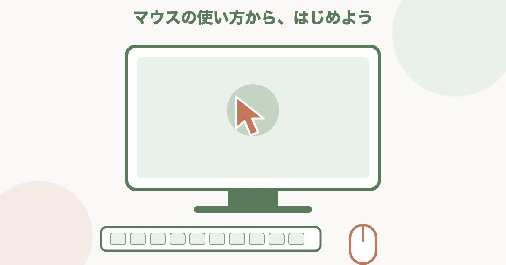
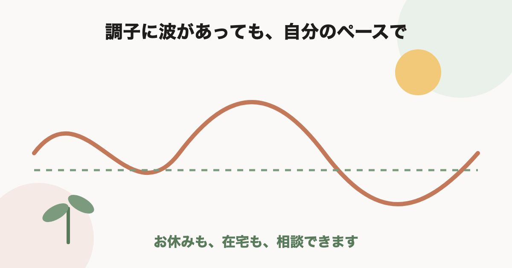

LICOブログ｜福岡市西区今宿の就労継続支援B型
福岡市西区今宿の就労継続支援B型「LICO（リコ）」のブログです。動画編集や3Dプリンターの作業、在宅での利用、見学・体験の流れ、1日の過ごし方など、通いはじめる前の「知りたい」にお答えします。

2026年11月27日
福岡市西区今宿の就労継続支援B型「LICO（リコ）」とは？作業・通い方・見学の流れ
福岡市西区今宿の就労継続支援B型LICO（リコ）を紹介。動画編集・3Dプリンター・パソコン作業、送迎、在宅のご相談、見学・体験の流れまで、はじめての方向けにまとめました。

2026年11月27日
福岡市西区のB型事業所で、YouTube動画編集に挑戦｜パソコン初心者も歓迎
福岡市西区今宿の就労継続支援B型LICOでは、YouTube動画の編集を仕事として取り組めます。カット編集・テロップ入れから、パソコン初心者の方も基本から一緒に進めます。

2026年11月27日
福岡市西区のB型事業所で、3Dプリンターを使ったグッズづくり
福岡市西区今宿の就労継続支援B型LICOでは、3Dプリンターでスマホケースや名刺入れなどのオリジナルグッズを作ります。デザインの整えから梱包まで、自分に合う作業が見つかります。

2026年11月27日
福岡市西区のパソコン未経験OKの就労継続支援B型｜マウスとタイピングから始められます
福岡市西区今宿の就労継続支援B型LICOは、パソコン未経験・初心者も歓迎。マウスの使い方・タイピング練習から、動画マニュアルとテキストマニュアルで自分のペースで進められます。

2026年11月27日
通うのがむずかしい日も。福岡市西区のB型LICOでは、パソコン作業の在宅利用もご相談いただけます
福岡市西区今宿の就労継続支援B型LICOでは、動画編集などのパソコン作業について、在宅での利用もご相談いただけます。通所との組み合わせ方や手続きの流れを説明します。

2026年11月27日
福岡市西区のB型事業所LICOの見学・体験の流れと、よくある質問
福岡市西区今宿の就労継続支援B型LICOの見学・体験の流れをまとめました。見学だけでも大丈夫か、受給者証がなくても相談できるか、利用時間や送迎など、よくある質問にお答えします。

2026年11月27日
福岡市西区のB型事業所LICOで過ごす1日の流れ｜送迎・お弁当・休憩について
福岡市西区今宿の就労継続支援B型LICOの1日の流れを紹介。送迎、10時からの作業、お昼のお弁当と休憩、15時の終わりまで。通いはじめの不安にお答えします。

2026年11月27日
体調に波があっても大丈夫？福岡市西区の就労継続支援B型LICOの通い方
体調に波がある方でも、福岡市西区今宿の就労継続支援B型LICOなら自分のペースで通えます。お休みの連絡、在宅の相談、定期面談で通うペースを一緒に考えます。
見学・体験のご相談はこちら
見学・個別相談は無料です。ご本人だけでなく、ご家族や相談支援専門員の方とご一緒でも大丈夫です。
LINEで見学・体験を相談する（無料）お電話でも受け付けています：090-1360-2839
事業所情報
| 名称 | 就労継続支援B型LICO（LICO・リコ） |
|---|---|
| 住所 | 〒819-0161 福岡県福岡市西区今宿東1丁目19-14-3号 |
| 電話 | 090-1360-2839 |
| 営業時間 | 月〜金曜 9:00〜18:00（利用者の活動時間は10:00〜15:00） |
| 運営 | 株式会社かむらっど |
| ホームページ | https://syurob-lico-fukuoka.github.io/syuroB-LICO/ |